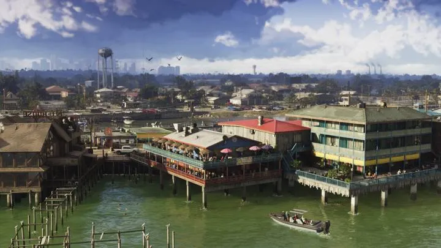

Grassrivers — болота и протоки к западу от Вайс-Сити: трава выше человеческого роста до горизонта, мангровые острова, аллигаторы и аэроглиссеры, которые с рёвом мчатся по мелководью. В первом трейлере здесь гонят по болоту полиция и беглецы, в Launch Trailer — драка на борту аэроглиссера. Это игровая версия Эверглейдс, одного из самых необычных мест Северной Америки.
Откуда название
Название региона почти дословно повторяет знаменитое прозвище Эверглейдс — «Травяная река» (River of Grass). Так назвала свою книгу 1947 года журналистка Марджори Стоунман Дуглас. Она объяснила, что Эверглейдс — не стоячее болото, а очень широкая и очень мелкая река: вода из озера Окичоби очень медленно течёт на юг через траву пилу-меч (sawgrass) к Флоридскому заливу. Дуглас всю жизнь защищала Эверглейдс от осушения и прожила 108 лет.
Реальный прототип: Эверглейдс
| Факт | Эверглейдс |
|---|---|
| Национальный парк | Открыт 6 декабря 1947 года, около 6100 км² |
| Статус | Объект всемирного наследия ЮНЕСКО (1979), биосферный резерват |
| Главная трава | Пила-меч (sawgrass) с зазубренными краями |
| Рептилии | Единственное место в мире, где рядом живут аллигаторы и крокодилы |
| Главная угроза | Осушение, загрязнение и инвазивные виды — прежде всего бирманские питоны |
В XX веке почти половину исходных Эверглейдс осушили под фермы и города, и только в 2000 году Конгресс принял огромный план восстановления. Через болота проходит дорога Тамайами-Трейл (открыта в 1928 году) — она соединяет Майами и Тампу, а вдоль неё стоят станции аэроглиссеров, в том числе принадлежащие племени миккосуки.
Звери Grassrivers и Эверглейдс
- Аллигаторы. Во Флориде их больше миллиона; в GTA 6 аллигатор лежит у бассейна и плавает в протоках (сравнение).
- Бирманские питоны. Их выпускали на волю владельцы экзотики; с 2000 года во Флориде поймали больше 23 000 змей, а штат проводит ежегодный Florida Python Challenge (сравнение).
- Фламинго, цапли, колпицы. В трейлерах видны стаи розовых птиц (сравнение).
- По данным Game Informer, в GTA 6 больше 170 видов животных, включая местных и инвазивных.
Что известно о Grassrivers в GTA 6
- Аэроглиссеры — главный транспорт региона (сравнение).
- Ночные операции и отряды в болотах — в трейлере 3 виден отряд с фонарями.
- Охотники и рыбаки в лодках, дома на сваях у воды.
Эверглейдс в кино — от «Ветра на Эверглейдс» (1958) до бесчисленных телешоу про ловцов аллигаторов. GTA 6 продолжает эту традицию: болото здесь — и красота, и место, где легко спрятать то, что не должно найтись.
- Прототип — Эверглейдс, юг Флориды.
- «River of Grass» — прозвище болот из книги Марджори Стоунман Дуглас (1947).
- Национальный парк Эверглейдс открыт 6 декабря 1947 года, около 6100 км².
- Единственное место в мире, где рядом живут аллигаторы и крокодилы.
- С 2000 года во Флориде поймали больше 23 000 бирманских питонов.



Сравнения в регионе (4)
Машины 1
Природа 3
 vs
vs
 vs
vs
 vs
vs